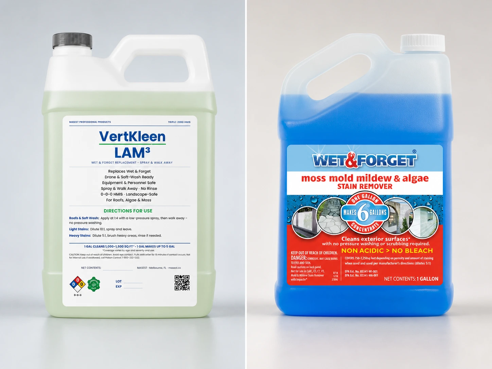

VertKleen LAM3 vs Wet & Forget
| Product | Package price | Per gallon |
|---|---|---|
| VertKleen LAM3 | / 2.5 gal = | |
| Wet & Forget | $34.00/gal | $34.00/gal |
Compare pack price with coverage, application time, repeat visits, water, cleanup, and how long the result lasts.
Compare coverage, working time, visible stain removal, labor, repeat visits, and cost per finished area.

| Product | Package price | Per gallon |
|---|---|---|
| VertKleen LAM3 | / 2.5 gal = | |
| Wet & Forget | $34.00/gal | $34.00/gal |
Compare pack price with coverage, application time, repeat visits, water, cleanup, and how long the result lasts.
Before-and-after photos show CR and LAM3 lifting ground-in grime, outdoor growth, and dark grout stains from hardscape.
See customer resultsWet & Forget and VertKleen LAM3 both use time instead of aggressive pressure, but they serve different operating needs.
Wet & Forget is designed for gradual weather-assisted stain removal. LAM3 gives contractors a long-working formula for moss, algae, lichen, mold, and mildew across mixed exterior surfaces.
Wet & Forget directs users to dilute concentrate 1:5, saturate a dry surface, and leave it without scrubbing or rinsing.
The company says visible results may take days to months. That can fit properties where weather can finish the work and the appearance does not need to change on a tighter schedule.
 See Wet & Forget's use directionshttps://www.wetandforget.com/wet-and-forget-concentrate.html
See Wet & Forget's use directionshttps://www.wetandforget.com/wet-and-forget-concentrate.html
LAM3 directions call for 1:5 on heavy staining and 1:10 on lighter staining.
Apply with a low-pressure sprayer or brush and leave the treatment to work. Visible change can begin within one or two weeks, with maximum results developing over as long as a month.
For heavily dirted surfaces, the label allows brushing and rinsing before reapplication. That flexibility helps contractors match the method to the property’s finish date.
LAM3 contains no acid, caustic, solvent, bleach, quat, or peroxide. It is pH neutral, HMIS 0-0-0, zero-VOC, mild in odor, and ships non-hazmat.
It is designed for pavers, wood, stucco, siding, metal, aluminum, paint, concrete, brick, glass, tile, and roofing materials.
Routine use adds no product-specific PPE or ventilation requirement. Access, spray equipment, weather, runoff, biological soil, and the surface still determine the job controls.
MASEST has a LAM3 and Purgo result on a painted exterior column with visible improvement after two weeks.
The same-angle progress view matters because this kind of treatment keeps working after the crew leaves.
The property grout and moss result also paired CR for ground-in dirt with LAM3 for longer-working exterior treatment.
LAM3 lists at .
Calculate mixed gallons, application labor, access, return visits, rinse work, and square feet reaching the agreed finish by the required date.
That completed-area cost tells a contractor which method creates the better margin.
Explore LAM3, the low-pressure cleaning guide, and exterior results.
| Replace | For | Use |
|---|---|---|
| Wet & Forget / bleach roof cleaners | Exterior moss, algae, mold, mildew, lichen, and stain removal | VertKleen LAM3 for spray-and-walk-away exterior biological staining. |
Judge the finished area, not the concentrate price. Use the same surface, stain, weather, application method, working time, and final inspection for both products.
Read the latest label and SDS for both cleaners. Try a small, hidden area first.
Follow your workplace rules for PPE, ventilation, storage, surface care, and rinse water. Need help? MASEST can plan the first test with you.
Get labels, SDS, and guidesSend what you use now, how long the job takes, and what clean needs to look like. We will help you build a fair comparison.
Price my exterior cleaning job